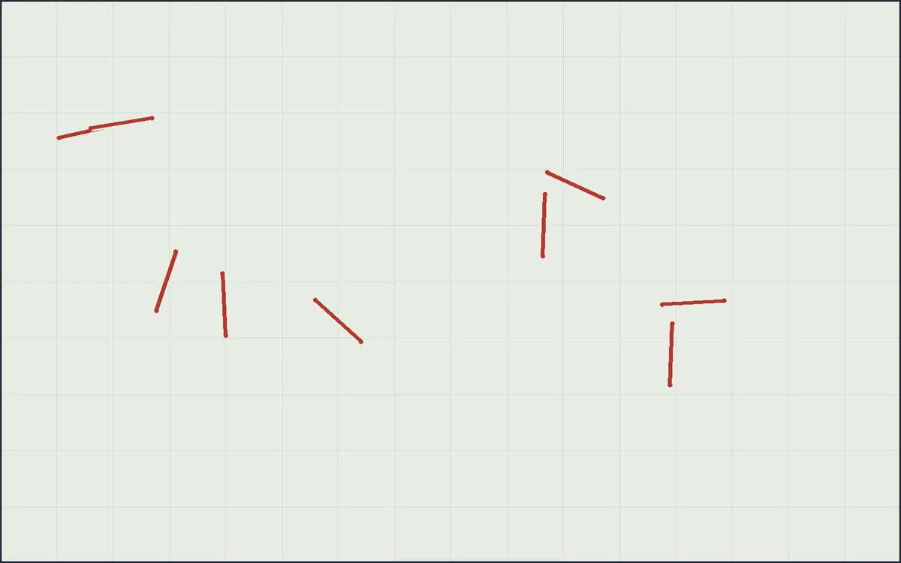
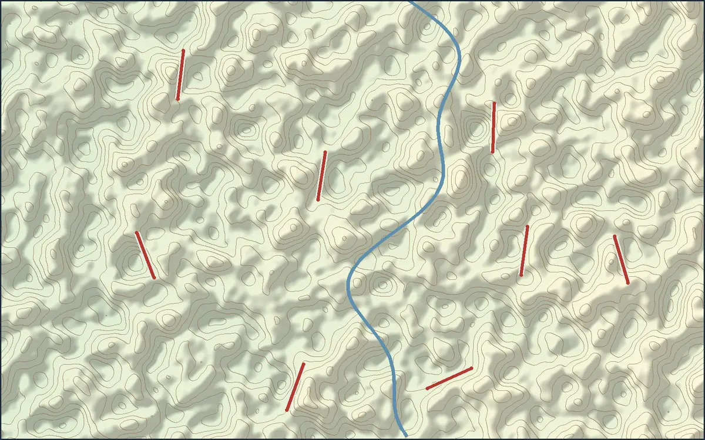
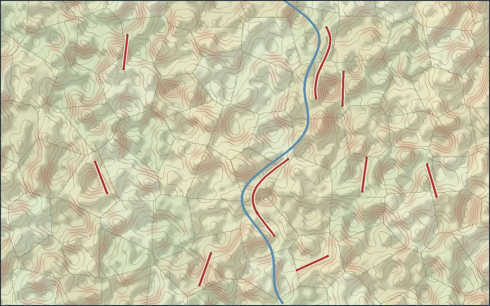

Kolik kontextu potřebuje AI agent, aby navrhl krajinný prvek na správném místě?
Diplomová práce porovnává, jak rozsah dat a pravidel, které agentní AI dostane, mění přesnost a efektivitu jejích návrhů krajinných prvků.
Přečíst oficiální zadání


Agent dostane jen zadání. Prvky umísťuje bez znalosti terénu, pozemků a vodních toků.
Agent zná terén. Prvky vede podél vrstevnic, ale nezná hranice pozemků ani omezení.
Agent zná terén, pozemky, vodní tok i pravidla. Prvky leží na ohrožených svazích a respektují potok.
Červená čára je navržený krajinný prvek. Schémata jsou ilustrační, vznikla programově a nejsou výsledkem výzkumu.
Pomáhá agentům víc kontextu, nebo jen víc práce?
Agentní AI modely umí samy hledat data a volat nástroje. Začínají se proto zkoušet i při plánování krajinných opatření. Práce zjišťuje, jestli jim širší kontext skutečně zlepšuje návrhy a jak se při tom mění efektivita.
- Cíl práce
- Ověřit a zhodnotit vliv rozsahu poskytnutého kontextu na přesnost a efektivitu agentních AI modelů při návrhu vybraných krajinných prvků.
- Praktická část
- Proof-of-concept studie srovnává nasazení různé míry kontextu v agentním workflow, případně s vlastním AI agentem.
- Validace
- Výsledky se porovnají a ověří předem stanoveným způsobem ve spolupráci s alespoň jedním odborným konzultantem.
Práce má čtyři dílčí cíle
Rešerše
Dostupné zdroje a legislativní rámce pro návrh vybraných krajinných prvků, se zaměřením na otevřené zdroje.
Mapování
Současný stav a možnosti využití agentních AI modelů při návrhu krajinných opatření.
Proof-of-concept
Studie, která srovnává dopad různé míry kontextu na výstupy agentního workflow.
Odborná validace
Hodnocení vygenerovaných výsledků externím konzultantem podle předem stanovené metodiky.
Práci uzavře zhodnocení a diskuse výsledků, identifikace limitů řešení a posouzení jeho potenciální škálovatelnosti.